|
Dr. Zhuo SU
Assistant Professor Rm 201, School of Data & Computer Science, Sun Yat-sen University, Higher Education Mega Center, Guangzhou, P.R. China, 510006 Email: suzhuo3@mail.sysu.edu.cn Research interests: Image Processing & Analysis, Computer Graphics |
|
|
ABOUT ME Zhuo SU is an
assistant professor of School of Data & Computer Science,
Sun Yat-sen University. He received the Ph.D degree in computer
science from School of Information Science & Technology, Sun Yat-sen
University in 2014. And he received the Master and Bachelor degree in
software engineering from School of Software, Sun Yat-sen University
in 2010 and 2008. He is a visiting student in The Chinese University of Hong
Kong from 2012 to 2013. He is the IEEE/ACM Member. He received the
2015 ACM Guangzhou Doctoral Dissertation Award, the 2012 Scholarship Award
for Excellent Doctoral Student Granted by Ministry of Education, and 2012 the
National Scholarship for Graduate Student. And his research is supported by
NSFC, NSF-Guangdong, etc. |
|
PUBLICATIONS |
|
2016 |
|
 |
Deep Colorization
Xiangguo Liang, Zhuo Su, Yiqi Xiao, Jiaming Guo, Xiaonan Luo, Deep patch-wise colorization model for grayscale images, ACM SIGGRAPH Asia 2016 Technical Briefs, 2016, PDF Accepted |
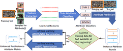 |
Attribute Recognition
Zhuo Su, Donghui Li, Hanhui Li, Xiaonan Luo, Boosting attribute recognition with latent topics by matrix factorization, Journal of the Association for Information Science and Technology, 2016, PDF Accepted |
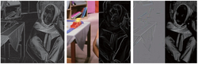 |
Texture Decomposition
Zhuo Su, Xuebiao Wu, Biyi Zeng, Jichao Yan, Xiaonan Luo, Related Reductive Texture Decomposition via Bilateral Kernel Regression, Journal of Computer-Aided Design & Computer Graphics, 2016, PDF Accepted (in Chinese) |
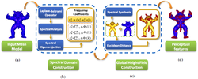 |
3D Model Metrics
Yihui Guo, Shujin Lin, Zhuo Su, Xiaonan Luo, Ruomei Wang, Yang Kang, A 3D model perceptual feature metric based on global height field, The Visual Computer, 2016 PDF |
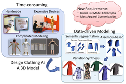 |
Data-driven Clothes Editing
Li Liu, Zhuo Su, Xiaodong Fu, Lijun Liu, Ruomei Wang, Xiaonan Luo, A data-driven editing framework for automatic 3D garment modeling, Multimedia Tools and Applications, 2016 PDF |
2015 |
|
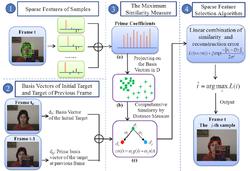 |
Sparse Visual Tracking
Jin Zhan, Zhuo Su, Hefeng Wu, Xiaonan Luo, Robust tracking via discriminative sparse feature selection, The Visual Computer, Vol. 31, 575-588, 2015 PDF |
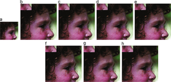 |
Single Image Super Resolution
Lei He, Jieqing Tan, Zhuo Su, Xiaonan Luo, Chengjun Xie, Super-resolution by polar Newton Thieles rational kernel in centralized sparsity paradigm, Signal Processing: Image Communication, Elsevier, vol. 31, pp. 86-99, 2015 PDF |
 |
Attribute Prediction
Dong Li, Zhuo Su, Hanhui Li, Xiaonan Luo, Boosting accuracy of attribute prediction via SVD and NMF of instance-attribute matrix, 16th Pacific-Rim Conference on Multimedia (PCM 2015), 466-476, 2015 PDF |
2014 |
|
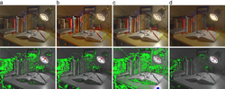 |
Edge-aware Tone Mapping
Alessandro Artusi, Zhuo Su, Zongwei Zhang, D. Drikakis, Xiaonan Luo, High-order wavelet reconstruction for multi-scale edge aware tone mapping, Computers & Graphics, Elsevier 51-63, 2014 PDF |
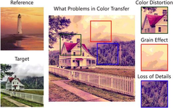 |
Example-Based Color Transfer
Zhuo Su, Kun Zeng, Li Liu, Bo Li, Xiaonan Luo, Corruptive artifacts suppression for example-based color transfer, IEEE Transactions on Multimedia, Vol. 16, No. 4, 988-999, 2014 PDF |
2013 |
|
|
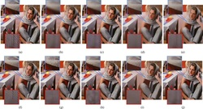 |
Edge-preserving Texture Suppression
Filter Zhuo Su, Xiaonan Luo, Zhengjie Deng, Yun Liang, Zhen Ji, Edge-preserving texture suppression filter based on joint filtering schemes, IEEE Transactions on Multimedia, Vol. 15, No. 3, 535-548,
2013
|
|
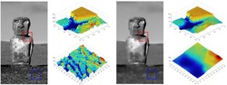 |
Novel
Image Decomposition Zhuo Su, Xiaonan Luo, Alessandro Artusi, A novel image decomposition approach and its applications, The Visual Computer, Springer, Vol. 29, No. 10, 1011-1023, 2013 PDF |
|
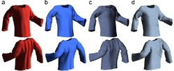 |
Material-aware
Cloth Simulation Li Liu, Zhuo Su, Ruomei Wang, Xiaonan Luo, Material-aware cloth simulation via constrained geometric deformation, Computers & Graphics, Elsevier, Vol. 37, 21-32, 2013 PDF |
|
|
Aesthetic-based
Cropping and Scaling Yun Liang, Zhuo Su, Chuntao Wang, Dong Wang, Xiaonan Luo, Optimised image retargeting using aesthetic-based cropping and scaling, IET Image Processing, Vol. 7, No. 1, 61-69, 2013 PDF |
|
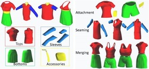 |
3D
Garment Modeling Li Liu, Ruomei Wang, Xiaonan Luo, Zhuo Su, Automatic 3D garment modeling by continuous style description, ACM SIGGRAPH Asia 2013, Poster Paper, 2013 PDF |
2012 & Before |
|
|
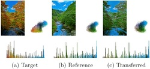 |
Gradient-aware
Color Transfer Zhuo Su, Daiguo Deng, Xue Yang, Xiaonan Luo, Color transfer based on multiscale gradient-aware decomposition and color distribution mapping, ACM Multimedia 2012 (SIGMM 2012), 753-756 PDF |
|
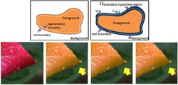 |
Local
Color Editing Zhuo Su, Xue Yang, Xiaonan Luo, Dong Wang, Local color editing using color classification and boundary inpainting, 21st International Conference on Pattern Recognition (ICPR 2012), 3196-3199 PDF |
|
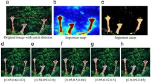 |
Patchwise
Scaling Yun Liang, Zhuo Su, Xiaonan Luo, Patchwise scaling method for content-aware image resizing, Signal Processing, Elsevier, Vol. 92, Issue 5, 1243-1257, 2012 PDF |
|
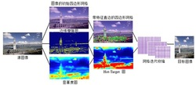 |
Deformation-based
Image Retargeting Yun Liang, Zhuo Su, Xiaonan Luo, Dong Wang, Image shrinkage based on hot-target map and featured edge preservation, Journal of Software, Vol. 22, No. 4, 789-800, 2011 (Chinese) |
|
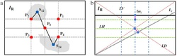 |
Aesthetic
Image Retargeting Xiaonan Luo, Zhongming Zhao, Zhuo Su, Yun Liang, Multiple cues saliency measurement and optimized image composition for image retargeting, Journal of Computational and Applied Mathematics, Vol. 236, No. 5, 704-713, 2011 PDF |
|
|
|